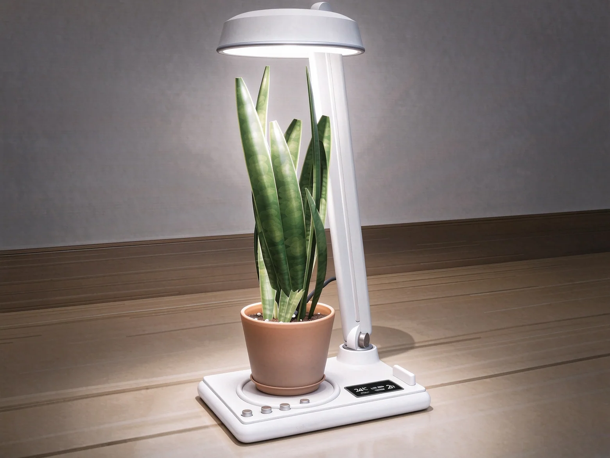

H17 / 硬件团队 · 实体展示
室内自动绿植养护装置
档案封面选自概念效果图 · 正面。
本次提供的是装置概念图。
本项目是一套基于ESP32开发的全自动智能植物养护设备，面向家庭盆栽自动化养护场景。系统集成定时浇水、周期循环浇水、定时补光、水位缺水报警、参数可视化设置功能。设备完成首次网络对时之后，日常运行完全关闭WiFi，依靠硬件时钟计时，全部配置参数断电保存，实现无人值守自动养护植物。


 返回硬件项目索引
返回硬件项目索引档案封面选自概念效果图 · 正面。
本次提供的是装置概念图。
本项目是一套基于ESP32开发的全自动智能植物养护设备，面向家庭盆栽自动化养护场景。系统集成定时浇水、周期循环浇水、定时补光、水位缺水报警、参数可视化设置功能。设备完成首次网络对时之后，日常运行完全关闭WiFi，依靠硬件时钟计时，全部配置参数断电保存，实现无人值守自动养护植物。
